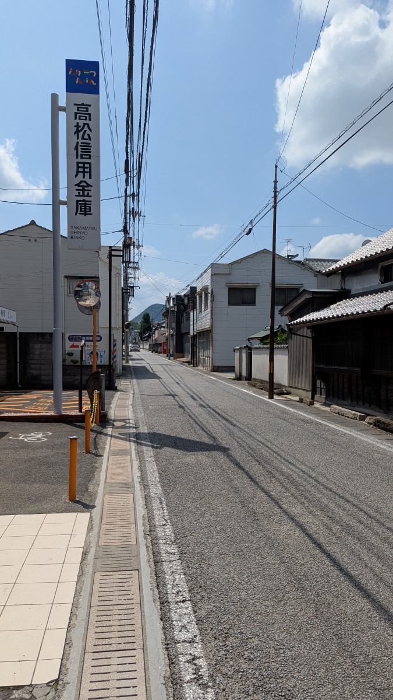

佛生山
Busshozan
根據網路評價，佛生山是一個能同時體驗歷史風情與現代設計感的特色區域。這裡最大的魅力在於完美地將江戶時代的懷舊街景，與設計感十足的現代建築（如知名的佛生山溫泉）融合在一起。遊客可以在充滿歷史感的街道上漫步，探訪古老的寺廟與商家，轉角又能遇見時尚的咖啡廳、雜貨店與餐廳，這種充滿驚喜的對比感，構成了佛生山獨一無二的旅行體驗。
1 / 3

佛生山街景
佛生山車站

佛生山街景
路旁的導覽牌

佛生山街景
街景，路上人煙稀少
可能是我們到訪的時間有點早，店家都還沒開，因此路上人煙稀少。
1 / 2
円光寺
円光寺外觀

円光寺
円光寺正門口
由於店家都沒開，我們隨意走到了一間寺廟「円光寺」，寺廟裡的住持非常的熱情，不只跟我們聊天，還端了冰綠茶讓我們消暑，真的是太感恩了！
1 / 2
佛生山溫泉
佛生山溫泉外觀
佛生山溫泉
佛生山溫泉招牌
雖然漫步走到了佛生山溫泉，但實在熱到不想泡溫泉，因此只在門口拍了一點照片便離開。
交通資訊
- 搭乘高松琴平電氣鐵道琴平線，並在「佛生山」站下車
留言板